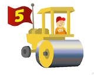

Apache Roller is a Java-based, full-featured, multi-user and group-blog server suitable for blog sites large and small.
Roller's installation guide covers deployment on Tomcat using a MySQL database. Users however have reported success running Roller on other app servers and databases.